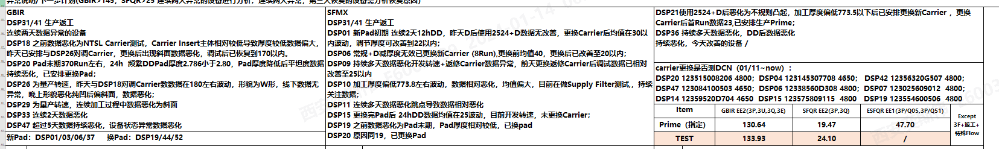
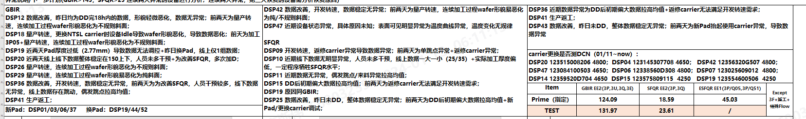
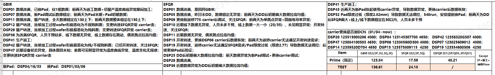
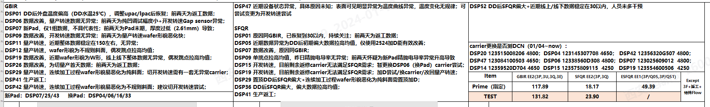
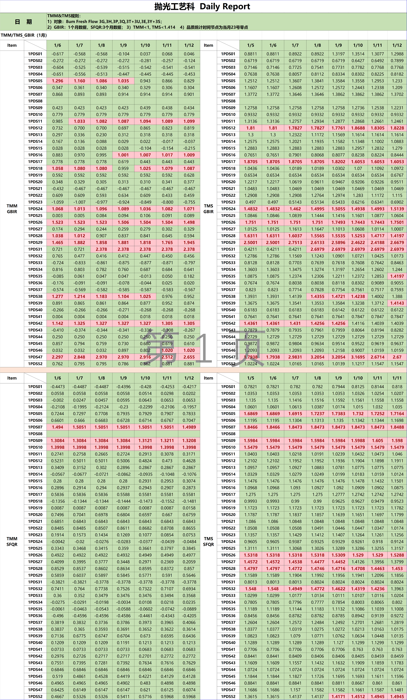

主打就是记录
2024年1月12日 20:41:44 Daily Logs
好好工作
1. 10为啥跑不了Prime？
前天晚上交接说跑不了Prime，之后一直跑的是Test到3H
DSP Medium Filter 测试 测试做10天 中间不跑Prime和外延
2. 盛龙去哪儿了？
？！
3. 交接的人都去哪儿了？
都打个卡去唱歌了嘛
今天打开了什么？
4. 03的SFMX异常 数据关注
先把设备状态调试正常，然后再测一次，剔除异常数据
5. BY0026 DD后SFQR大，晚上用DSP #29再打磨两个小时吧，29数据异常，已经停了，打磨完换PAD
磨完换Pad
6. 20数据不好就安排换Pad吧，Pad厚度很低了，不挣扎了
不磨盘，19昨天有把Pad给磨透了
日报
前三天的日报

昨天

-1

-2

-3

我的日报
一些没有意义的文字
哎呀，困死宝宝啦 你在搞啥
啥叫eV 电子伏特
回OCAP
哎呀，是真的困 雌兔眼扑朔 雄兔眼迷离
Red, flame, mage, robe, silk, satin, beauty, mage，single girl，whole body
小说中的一个设定集
赤焰法袍
赤焰法袍肯定是美女法师的专属啦
然后好像就没有什么关键词了
与其自己生成图片不如看别人弄好的图片，美图是真的好看啊
爱了爱了
星际穿越

TMM/TMS更新最优方案
1. 打开TMM/TMS Excel
2. 打开SPC 软件 输入GBIR 选择时间，开刷
3. 导出 打开/不打开都行
4. 输入SFMX 选择时间，开刷
5. 导出
6. 粘贴GBIR到SFMX旁边
7. 分列 文本列格式化为数字列 增加DSP08 和其余数据
9. 打开TMM表格，昨天列上复制插入新列
10.全部修改标题
11.确认粘贴数据 二次确认数据准确性
12.保存 复制粘贴为图片
13.打印 关闭
突然间刷到一本开头看起来非常惊艳的小说
稳住别浪
但是突然间才发现自己也有一本弃坑的小说
作者大大也都是烂尾的人了
也在纠结要不要把那个故事给继续下去
不像别人的故事那样描述的及其动人
但是自己的东西说起半天肯定也是自己的嘛
哎~~~
想想就是心累